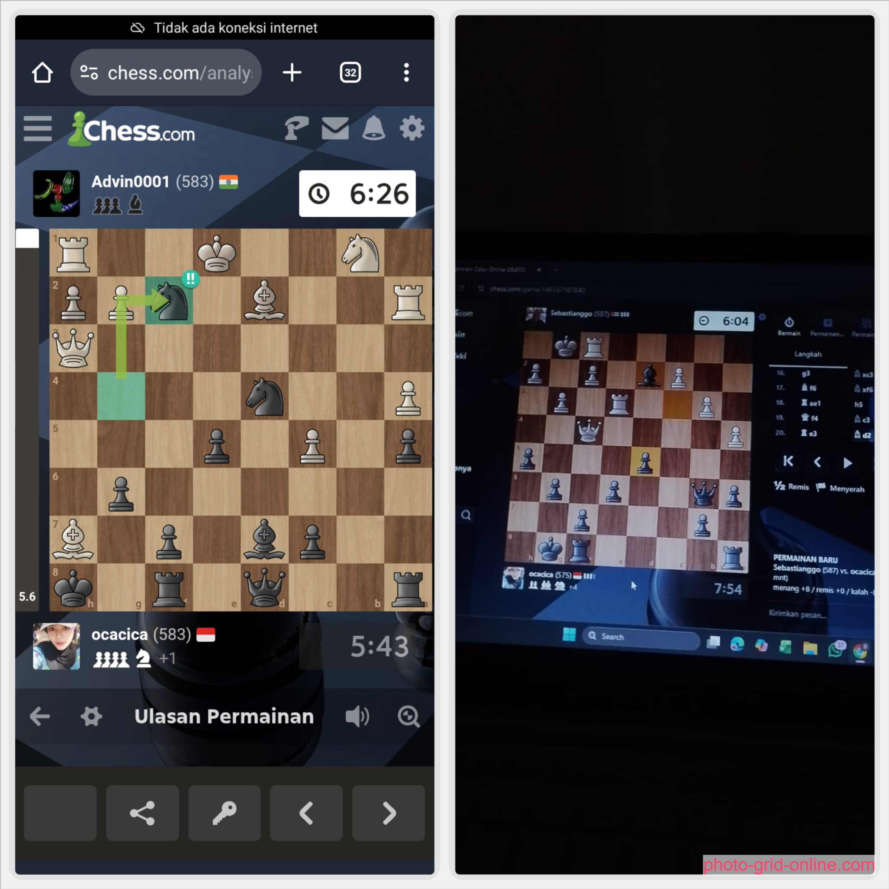
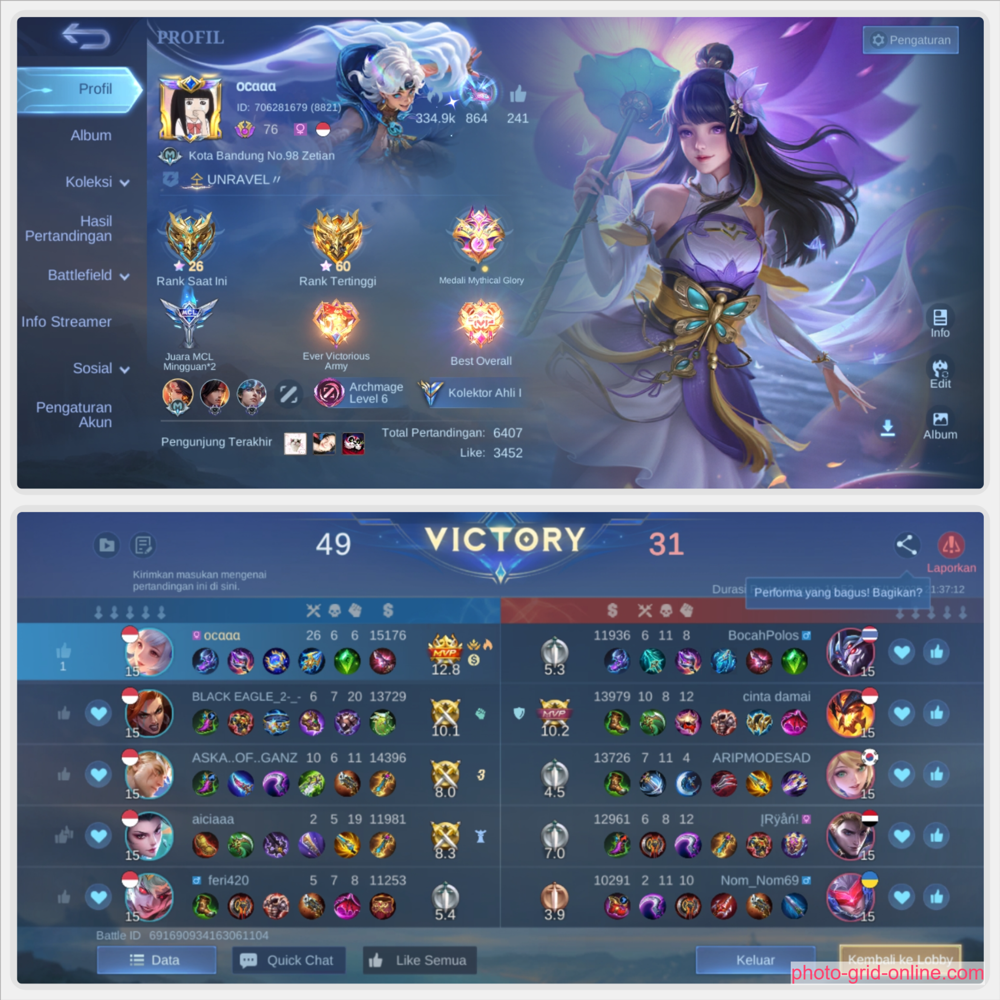
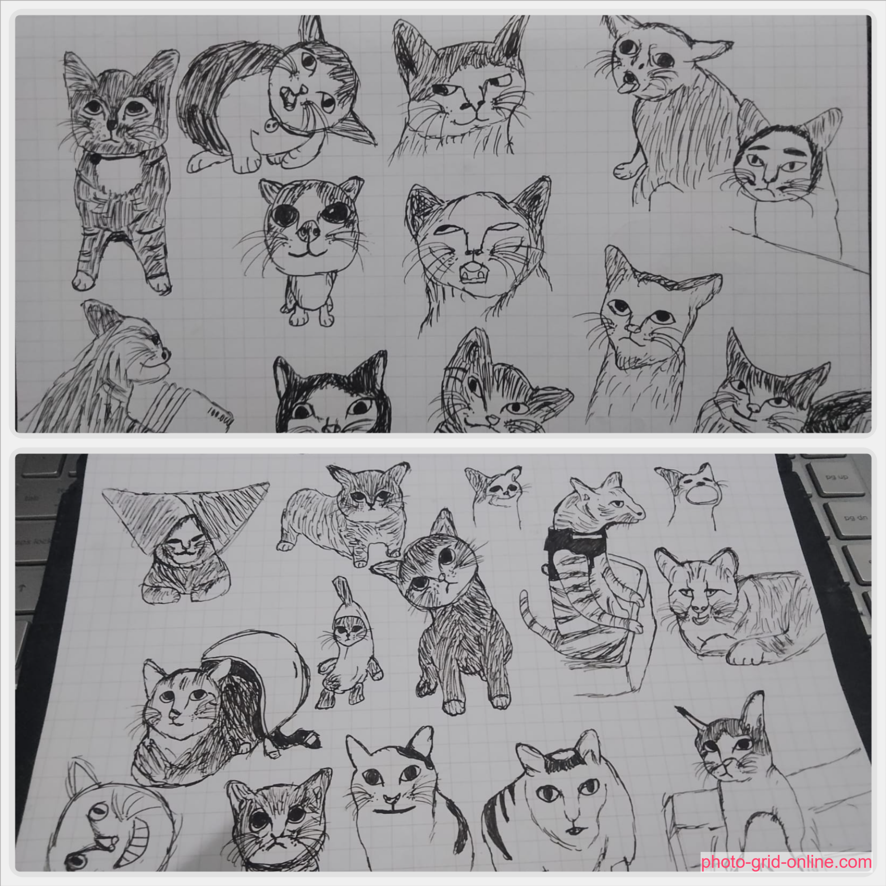

Hobi Utama
Crochet atau yang biasa disebut rajut🧶
Crochet itu buat aku kayak meditasi — fokus, tenang, dan hasilnya bisa dilihat dan dipakaiiii ataupun di juall! Aku bikin berbagai item rajutan, dari aksesori sampai dekorasi. Kadang ada yang pesan juga hhii 🥰 aku kasi liat beberapa hasilnya yaaa, sebenernya masi banyakk, cuma belum sempat buat foto ><
Ini Jamur Crochet
Benangnya pakai 'milk cotton', aku bikinnya sekitar 45-60 menitan, ini paling best seller sihhh karna emang aku baru promosi dan foto produk (niat) yang ini aja hhe
Pesanan / Personal
Ini Jamur jugaa
Aku bikin ini buat menthor di tempat magangkuu
gift
orang bunga
Ini difotoin temenkuu karna katanya lucuu banget, benangnya pakai 'milk cotton', bikinnya 3 harian
Personal
ikann baduttt nemoo
aku bikin ini karna lucu ajaaa, pakai benang 'milk cottnon', bikinnya 30 menit karna gampang
Personal
Karakter Anime - Zenitsu
aku bikin ini karna pengen coba bikin karakter anime, benangnya 'milk cotton' bikinnya 6 jam TT lama juga yaa
Gift
Syall Mikasa
aku bikin ini karna terinspirasi dari anime yang aku tonton dan iniii Project terpanjang akuu, bikinnya 2 minggu, agak bosenin karna ngulang polaa, tapi aku suka hasilnyaa, pake benang 'milk cotton'
Personal
Kapibaraa
Aku bikin ini karna buat gift temenn karna aku pinjam jas hujan diaa, ini harusnya ada topi dan tas buat aksesorisnya tpi ga sempet bikin hhe, bikinnya 30 menitan, pakai benang 'milk cotton'
Pesanan / Personal
Boneka Orang unicorn
Aku bikin ini karna lucuu. bikinnya dr pagi sampe sore deh, karna waktu itu aku free time. pakai benang 'milk cotton' btw ini sizenya gedee
Personal
Rapunzel Crochet
Aku bikin ini karna cantikk, bikinnya 3 jam-an karna bnyk aksesorisnya, pakai benang 'milk cottnon'
Personal
Pouch sebaguna
Aku bikin ini karna aku merasa ini akan berguna hhe.
Personal
Di luar pekerjaan
Hal yang aku suka

Main Catur
Sendari kecil aku suka main catur sama ayah, sempat sering ikut lomba juga pas SD dan suka main catur sama guru di sekolah hahaha, tapi sekarang jarang nemu lomba catur nasional sih hhu. aku lebih suka main offline makanya elo ku kecil, sekarnag paling main sama orang random dikomunitas.

Main ML
Aku main ML dari 2019 sewaktu aku SMP, suka dibilang "uda main lama ko belum imo" :((( tapi seru bangettt, dulu role aku jung sama mm, cuma skrg tu sulit ya main jung (suka diremehin) jadinya aku main mid sama mm deh, kadang2 exp atau tank kalo gaada yang pick TT

Menggambar

Baca Bukuuu dan Nonton Film
belum sempet masukin foto...... pokoknya buku fav aku dr seriesnya keigo, laut bercerita, ronggeng dukuh paruk dll.
kalo film aku sukanya nonton dracin kolosal, bukan short dracin yeee BEDAAAA BGTTT!!!!
Udah kenal aku? Yuk ngobrol!
Kalau mau tau lebih banyak atau ada peluang kerja yang cocok, jangan ragu hubungi aku ya 🌸